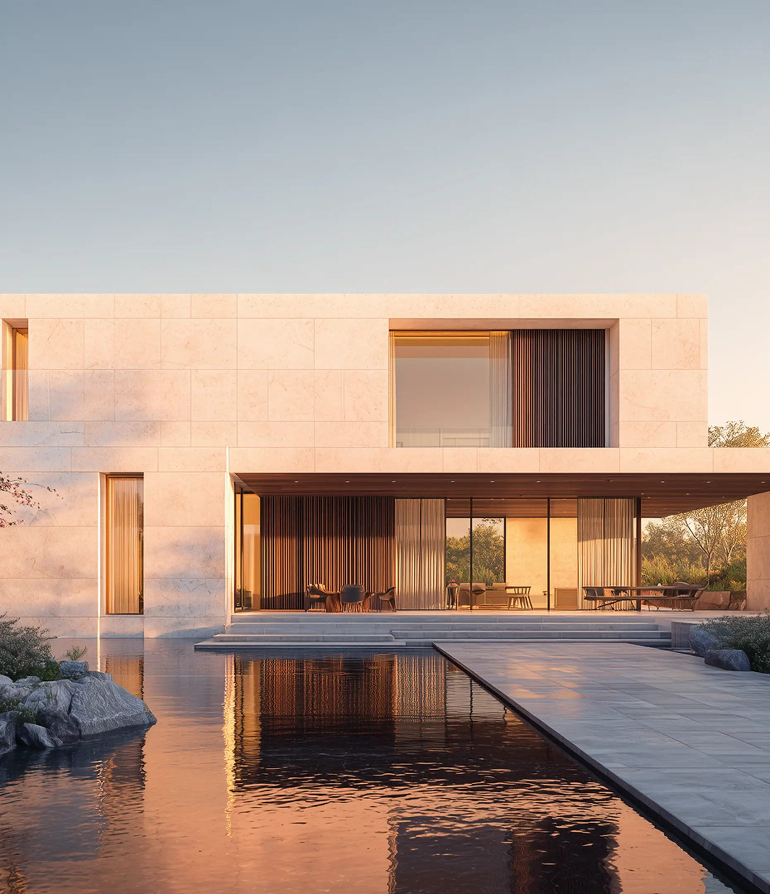
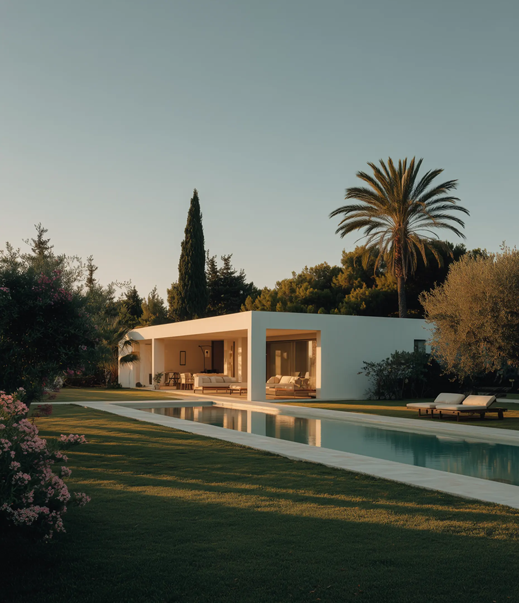
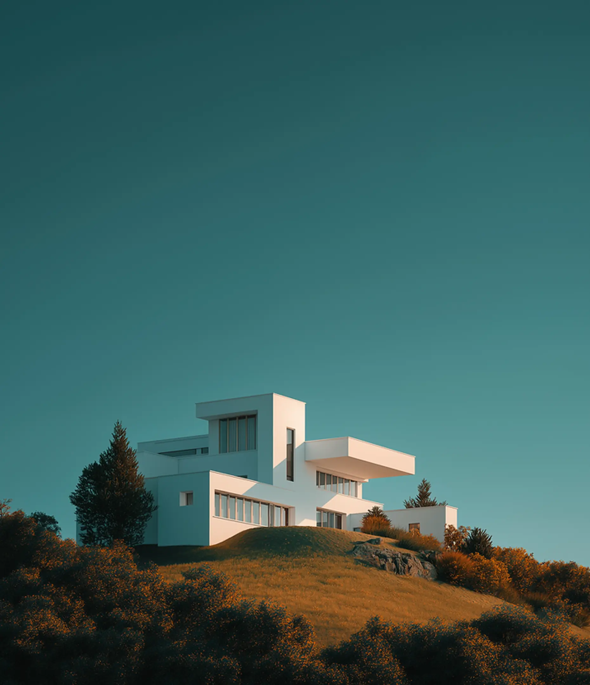
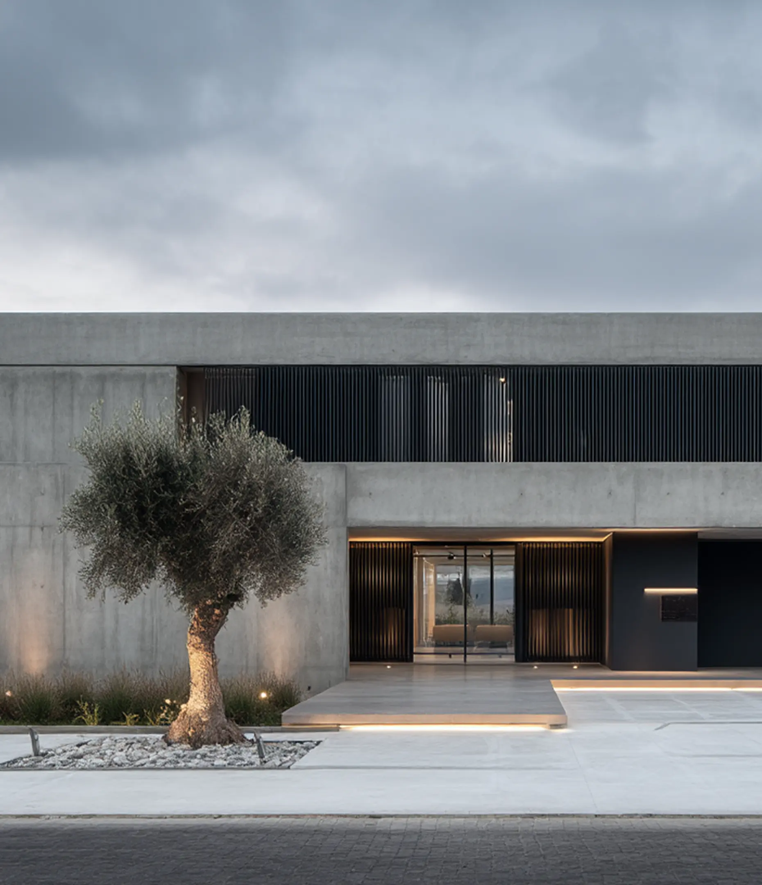
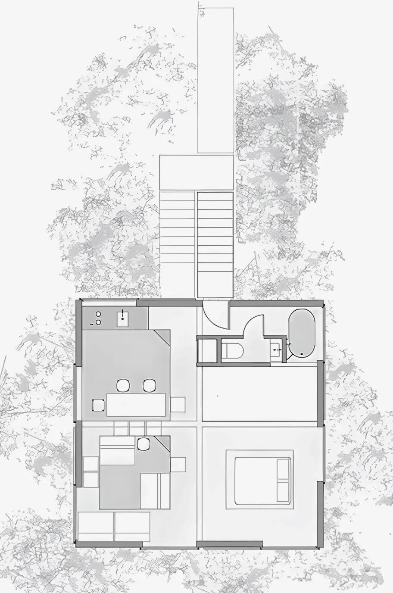
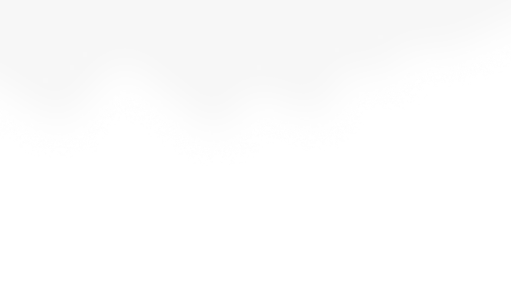

Homes shaped by silence, light, and time.
Origin
Rooted in the traditions of Copenhagen craftsmanship and the disciplined clarity of Nordic rationalism, our journey began within the intimate setting of a small atelier. Driven by a profound belief that architecture must transcend mere service, we have consciously evolved into an independent studio dedicated to a higher purpose. We approach each project as a deep cultural inquiry—a meaningful act of creation that engages with history, materiality, and human experience. Our work is not simply about constructing buildings, but about thoughtfully shaping the cultural and environmental landscape for generations to come.
What We Do
We create private residences where geometry, silence, and landscape form a single composition. Each house grows from its site — not imposed upon it.
Why We Exist
A home is not just a shelter. It can carry memory, reflect character, and echo the rhythm of its land. This is why our process begins with listening — not drawing.
Philosophy
Architecture should feel inevitable — like it has always belonged there. We don’t decorate; we reveal structure. Every line has purpose. Every void is intentional.
Location
Nyhavn 17, 1051 Copenhagen K, Denmark
55.6790° N, 12.5937° E
What We Do
From a harbor city shaped by wind and water — we build homes across continents, but our roots remain in the North.


Listen & Understand
Every project starts by observing the land, the light, and the future inhabitants. We do not impose form; instead, we study context, climate, and lifestyle to define the essence of the house. Insight guides every decision.
Conceptualize & Shape
Ideas transform into spatial logic. Proportions, geometry, and material choices are carefully orchestrated. Light, shadow, and texture are considered as active participants, shaping how the space is perceived and experienced.
Refine & Integrate
Details are meticulously refined — joints, edges, materials, and transitions. The building emerges in harmony with its environment, offering a calm, timeless, and meaningful experience for those who inhabit it.
Site Reading & Orientation
Studying landforms, wind, sunlight, and views to place the house as if it grew from the terrain itself.
Spatial Narrative
Designing movement — how a person enters, pauses, turns, and discovers light, view, or silence.
Structural Essence
Choosing a structural system not for style, but for clarity, proportion, and longevity.
Material Logic
Concrete, stone, wood, glass — selected not for appearance alone, but for weight, touch, sound, and how they age.
Light as Construction
Working with morning light, dusk shadows, reflections, and darkness as part of architecture — not as an afterthought.
Interior as Architecture
Built-in volumes replace furniture. Empty space holds more meaning than added decor.
Craft & Precision
Drawings become reality through materials, tools, and human hands — where care matters more than perfection.
Time & Patina
Designing for decades, not trends — so that surfaces age, deepen, and become part of memory.







Architectural Vision
Tailored concepts — proportion, logic, light, and spatial rhythm.
Site & Landscape Integration
Topography, water, vegetation — the house grows from the land, not into it.
Interior Architecture
Tailored concepts — proportion, logic, light, and spatial rhythm.
Materials & Details
Selection of concrete, stone, glass, wood — designed to age with dignity.

Structural Collaboration
Engineering for large spans, floating volumes, seamless glass façades.
Craft Supervision
Artistic and technical control during construction — precision preserved.

Custom Elements
Fireplaces, doors, stairs — not decor, but architecture.

Light & Atmosphere
How dawn moves across walls, how evening shadows rest.

The First Line
Every house begins long before concrete or timber — it starts with a single line. Drawn quietly, often in pencil, it carries intention: where the morning light will fall, where silence will live, where the family will gather. These early drawings are not about walls and measurements, but about atmosphere, proportion, and belonging. They are a promise — that space can hold emotion, memory, and time.

When Paper Becomes Place
As the drawing evolves, it gains weight. Lines turn into structure, materials are chosen not for trends, but for how they will age, sound, and catch the light. What once was a sketch becomes foundation, roof, and rhythm. Yet the essence remains unchanged — the house must feel inevitable, as if it grew from the land itself. A finished home is not the end of the drawing — it is the moment the drawing begins to breathe.

Where
Time
Shapes
Architecture
— they are made to outlive us.
Sense & Settle
A home should not stand against the land — it should belong to it. We read the wind, topography, and light before a single line is drawn. Form becomes a quiet answer, not a forceful gesture.
Endure & Evolve
We build for years, not seasons. Concrete that softens, wood that darkens, stone that remembers footsteps. Every detail is made to age, to be repaired, to live. Time should refine a house, not break it.
Craft & Continuity
Architecture is not invention — it is continuity. Hands and materials give form to what drawings only suggest. Precision is care, not perfection. A house becomes real when craft meets patience and purpose.


News
New Residence in Progress
We have started construction of a private home on a coastal hillside. The project focuses on natural stone, exposed concrete, and panoramic glazing facing the sea. Completion is planned for autumn 2026.
Lecture in Copenhagen
Our studio was invited to speak at the Nordic Architecture Forum. We shared our approach to proportion, silence in space, and the role of landscape in private architecture.
Materials & Research Lab
We opened a small internal lab dedicated to testing concrete mixtures, natural pigments, and aging of materials under Nordic climate conditions. Results will inform upcoming projects.
New Residence in Progress
We have started construction of a private home on a coastal hillside. The project focuses on natural stone, exposed concrete, and panoramic glazing facing the sea. Completion is planned for autumn 2026.
New Residence in Progress
We have started construction of a private home on a coastal hillside. The project focuses on natural stone, exposed concrete, and panoramic glazing facing the sea. Completion is planned for autumn 2026.
New Residence in Progress
We have started construction of a private home on a coastal hillside. The project focuses on natural stone, exposed concrete, and panoramic glazing facing the sea. Completion is planned for autumn 2026.
“Good architecture doesn’t demand attention — it earns it over time.”